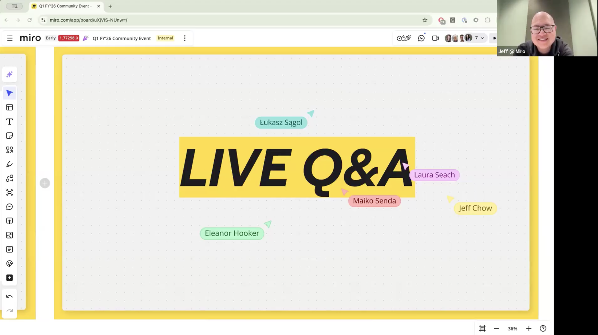

Enterprise Community & Customer Advocacy
MIRO
BEFORE
Ad hoc advocacy requests, one-off event outreach, legacy Customer Advisory Board (CAB) with little member commonality and no roadmap influence. No structured relationships in top enterprise accounts.
AFTERCommunity and customer programs designed to engage and activate top accounts by ARR, from end users to executive leadership. Miro Heroes gives power users in product, design, and engineering roles a home: peer connection, early access, and a direct feedback loop to product. The Lighthouse program and CAB bring decision makers into the conversation around roadmap priorities. The exclusive preview program creates a compelling answer to "what's in it for me?" at every level and generates continuous product insight in return.
78%
YoY community growth
2k
enterprise community members in top accounts by ARR
MAU lift
in target accounts
Miro Heroes · Power User Community

Customer Story · Miro × On

Exclusive Preview · Head of Product + Community
